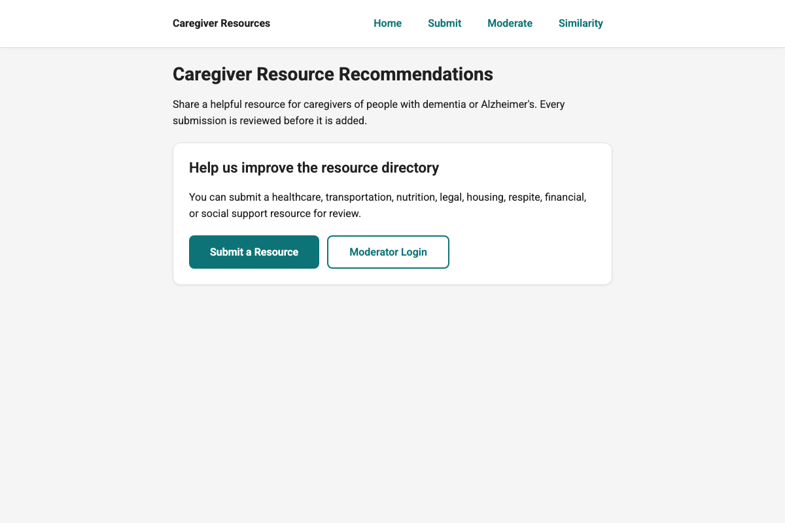
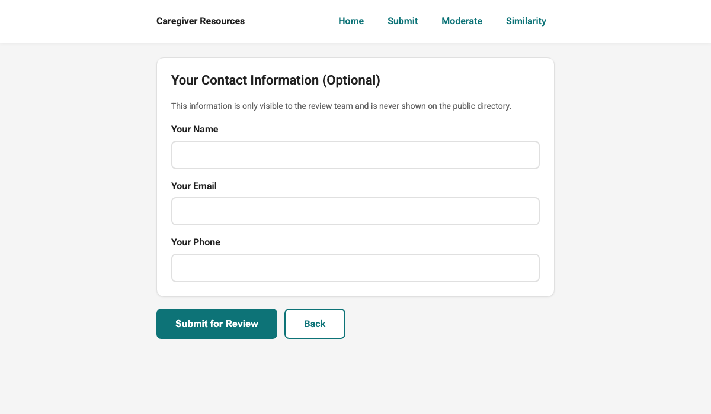

User guide
Carebot Caregiver Resource Directory — Plain-language steps for submitting a resource. Markdown: userguide.md.
If you know of a place that helps caregivers, you can add it here. A doctor's office, a meal program, a support group, a respite service. Anything that helps someone caring for a person with dementia or Alzheimer's.
This guide walks you through what to do. You don't need to be good with computers to use it. If you can type your name into a box, you can submit a resource.
What this website is for
Carebot is a tool that helps Alabama families find care. Families come here to ask questions and get back a list of places that might help them. The list is only as good as what's in it.
That's where you come in. You probably know about a good resource that isn't on any list. Maybe it's a small local nonprofit. Maybe it's a church that delivers meals. Maybe it's a service your mother used that made a real difference. If you add it here, someone else who needs it will be able to find it.
Every resource you send gets reviewed before it shows up in the directory. So don't worry about making a mistake. A real person will look at what you wrote before anything goes public.
Before you start
You don't need to create an account. You don't need to log in. You just need to know a few things about the resource you want to share.
The most important things are:
- The name of the provider (the business, nonprofit, agency, or person)
- The name of the service they offer
Everything else is optional. If you know their address and phone number, great. If you don't, skip those boxes. Your submission will still go through.
If you only remember a couple of details, submit what you have. The review team can fill in the gaps. Partial information is still useful.
How to submit a resource
Step 1. Open the home page
Go to the Carebot website and click where it says "Caregiver Resource Recommendations." You'll see a short welcome message and a button that says Submit a Resource.
Click that button.

Step 2. Fill out the form
The form is one long page broken into four sections. You don't have to fill everything in. Only the boxes marked with a red asterisk (*) are required.
Take your time. You can scroll up and down as much as you need. Nothing gets sent until you click the button at the bottom.

Section 1: Who provides this resource?
This is where the provider's contact information goes. The provider is whoever runs the service. A clinic, an agency, a church, a volunteer group. Whatever it is.
- Provider Name is required. Write the name of the organization, not the person who works there.
- Website, Phone, and Email are optional. Add them if you know them.
Section 2: Where are they located?
This helps people find providers near them. Write down the address if you have it. If the provider covers a wider area (for example, "all of Tuscaloosa County"), put that in the Service Area box.
Everything in this section is optional. Skip anything you don't know.
Section 3: What service do they offer?
This is the part about what the provider actually does.
- Service Title is required. Write a short name for the service, like "Weekly caregiver support group" or "In-home respite care."
- Category is a dropdown. Pick the one that fits best: healthcare, transportation, nutrition, legal, housing, respite, financial, or social support.
- Description is where you can say more. A sentence or two is plenty. Explain what the service is and who it helps.
- Cost tells people whether it's free, sliding scale, or paid. Write whatever you know. "Free" works fine.
- Hours, Eligibility, and Languages are optional. Add them if the information is easy for you to find.
Section 4: Your contact information (optional)
You can leave this section completely blank if you want. We only ask for it in case the review team has a quick question about your submission. Your name and email will never be shown to the public.

Step 3. Submit for review
When you're ready, click the button at the bottom that says Submit for Review. That sends your information to the review team.
You'll see a page that says "Thanks!" That means your submission was received.

What happens next
After you submit, a moderator reads through what you sent. They check that the information is accurate and that the resource is appropriate for caregivers. This usually takes a few days.
If the resource already exists in the directory, the moderator may merge your submission with the existing entry instead of adding a new one. Your contribution still helps because it confirms the provider is still active or adds missing details.
You won't get an email confirmation. The system doesn't send notifications yet. If you want to check whether your submission went through, you can go back to the website in a few days and search for the provider name.
Checking if a resource is already listed
Before you submit, you might want to check if the provider is already in the directory. There is a search tool for this.
From the home page, look for the similarity search option. Type in a short description of the service, like "home delivered meals in Tuscaloosa" or "caregiver support group Birmingham." The tool will show you any providers that sound similar to what you described.
If you find a good match, you don't need to submit. If nothing matches, go ahead and add the new one.

Staff / sponsor guide
This section is for non-technical sponsors and staff moderators. Public users can submit recommendations without logging in.
Public: submit a resource recommendation
- Open the public submission page (linked from the app home page).
- Fill out the resource information (name/title, location, description, eligibility, etc.).
- Submit the form.
What happens next: submissions do not immediately appear publicly. They go to the moderation queue for review.
Staff: log in
- Open the staff login page.
- Sign in with the staff credentials created by the team (Django user accounts).
There is no “Sign in with Google” unless OAuth is added later.
Staff: review the moderation queue
- Navigate to the moderation queue page (typically under /manage/…).
- Select a submission to review details.
- Use similarity suggestions to detect duplicates.
Goal: maintain a clean catalog by avoiding duplicate listings and merging data where appropriate.
Staff actions: approve, merge, reject
- Approve: accept the submission as a new resource listing.
- Merge: combine submission info into an existing listing (preferred when the submission is a duplicate).
- Reject: decline submissions that are inappropriate or invalid.
Tip: use merge when the same organization/resource already exists, even if the submission adds extra details.
Optional: AI chat feature
If chat is enabled for your deployment, it requires an operator-provided API key (see Run & deploy and FAQ).
If no key is configured, the system should fail gracefully (disabled state or safe error message).
Common questions
What if I only know the name of the provider and nothing else?
Submit anyway. The review team can look up the rest. A name and a general idea of what they do is enough.
What if I make a typo?
Moderators will catch small spelling errors before publishing. If you noticed a mistake right after submitting, you can submit a corrected version and leave a note in the description. The moderators will sort it out.
Can I submit a resource that helps caregivers but isn't specifically for dementia or Alzheimer's?
Yes. General caregiver support, respite services, transportation for seniors, meal programs, and legal help all count. If it helps someone caring for an aging or ill family member, it belongs here.
My internet is slow. Do I have to finish in one sitting?
Yes, for now. If you leave the page before clicking Submit, you will lose what you typed. We recommend writing your notes on paper first, then opening the form and typing them in all at once.
What if I submit the same resource by accident?
Nothing bad happens. The review team catches duplicates and merges them. Don't worry about it.
Is my information private?
The provider information you enter is meant to be public. That's the point. Your personal contact information (section 4) is only visible to the review team and is never shown on the public directory.
If something goes wrong
If the page doesn't load or the Submit button doesn't work, try these things in order:
- Refresh the page by pressing F5, or by closing the browser tab and opening the website again.
- Check that your internet connection is working by trying another website.
- Try a different browser. Chrome and Safari both work.
- Try again in an hour. Sometimes the website is being updated.
If none of that helps, the site may be down for maintenance. Check back the next day.
A note on accessibility
This site is designed to be easy to use for people who don't spend a lot of time on computers. The text is large. The buttons are big enough to press without fine motor control. You don't need to log in or remember a password. You can use a screen reader with it.
If you run into a part of the site that is hard to use, we want to know. You can reach us through the contact information on the main Carebot page.
More detail: Accessibility design and research.
Last updated: April 2026
AI disclosure: For this assignment's preparation, the author has utilized Claude (Claude Code), a large language model created by Anthropic. Within this assignment, Claude was used for drafting assistance, outlining, and wording. All content was reviewed and verified against the Carebot crowdsourcing templates by the author before submission.